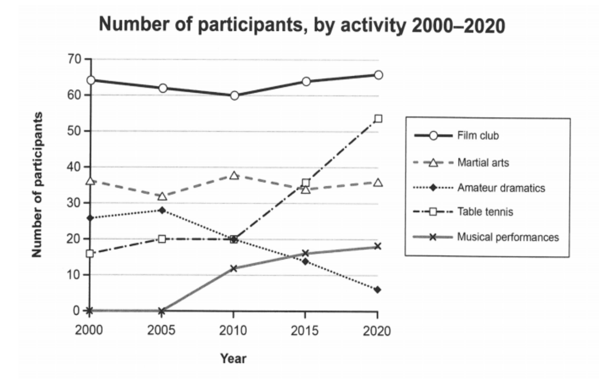

Task 1 — Melbourne social centre activities
The graph below gives information on the numbers of participants for different activities at one social centre in Melbourne, Australia. Summarise the information by selecting and reporting the main features, and make comparisons where relevant.

The line graph shows how many people took part in five activities — film club, martial arts, amateur dramatics, table tennis and musical performances — at one social centre in Melbourne between 2000 and 2020.
Overall, film club remained the most popular activity throughout the period, while the numbers for the other activities diverged sharply: table tennis grew steadily to overtake its rivals, and amateur dramatics fell away, whereas musical performances only gained participants from 2010 onwards.
Film club consistently attracted the largest attendance, fluctuating narrowly between 60 and 66 participants across the whole period. Martial arts held a steady second place, moving only slightly from 36 to 36, with a low of 32 in 2005 and a high of 37 in 2010.
By contrast, table tennis participation more than tripled, climbing from 16 in 2000 to 54 in 2020, overtaking martial arts around 2015. Amateur dramatics declined almost continuously, from 26 in 2000 to just 6 in 2020. Musical performances had no participants until 2010, then rose modestly from 12 to 18, remaining the least popular activity.
TA / TR：完整覆盖 5 条活动线：最受欢迎的 film club（60–66 窄幅波动）、稳居第二的 martial arts（32–37）、翻三倍多的 table tennis（16→54）、持续下滑的 amateur dramatics（26→6）、2010 年才起步的 musical performances（0→18）；Overview 按"最稳定/最分化"分组，对比（overtaking / more than tripled / remained）到位，无杜撰数据。
CC / LR / GRA：四段式（Introduction → Overview → 稳定组 → 变化组）；衔接词 Overall / By contrast / whereas / then 组织对比逻辑；LR 使用 fluctuate narrowly / hold a steady place / climb / decline almost continuously 等动态图词；GRA 简单句与复合句交替，时间状语（in 2000 / around 2015 / from 2010 onwards）位置灵活，长句控制在 30 词以内。
participants— 参与者fluctuate narrowly— 窄幅波动hold a steady place— 保持稳定位置more than triple— 增长两倍多decline almost continuously— 几乎持续下降overtake— 超越from … onwards— 从……起